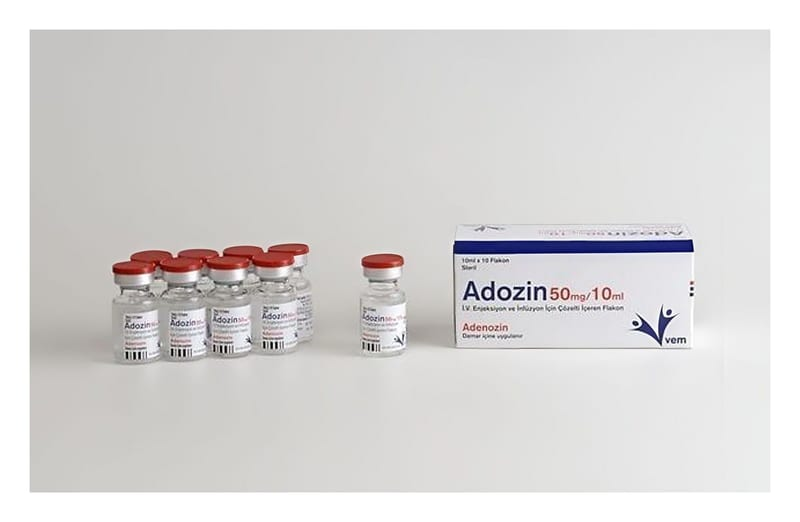

Adozin 50 mg/10 ml IV Enjeksiyon Ve İnfüzyon İçin Çözelti İçeren Flakon, 10 Flakon

Ne için kullanılır
KT · Bölüm 1 ADOZİN enjeksiyon veya infüzyon (serum ile) için çözeltidir. Her 1 ml ADOZİN 5 mg adenozin içerir. 10 adet flakon içeren ambalajlar ile kullanıma sunulmaktadır. ADOZİN antiaritmik bir ilaçtır. Anormal kalp ritimlerinin tanısı ve tedavisi için kullanılmaktadır.
Ayrıca, bir stres testi ile bağlantılı olarak kalpteki kan damarlarının genişletilmesine yönelik tanısal bir araç olarak (kalbin fotoğrafının çekilmesi) da kullanılmaktadır.